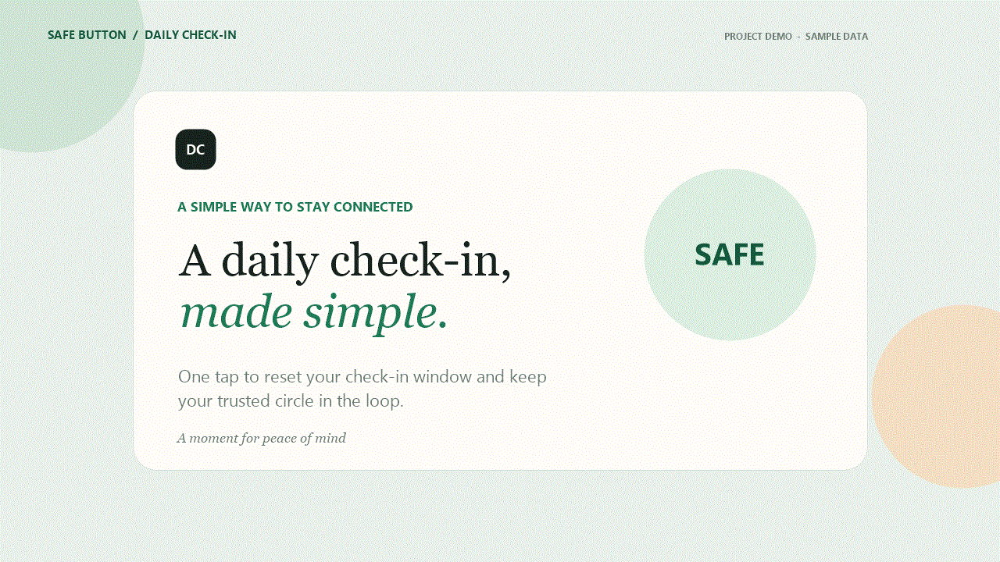
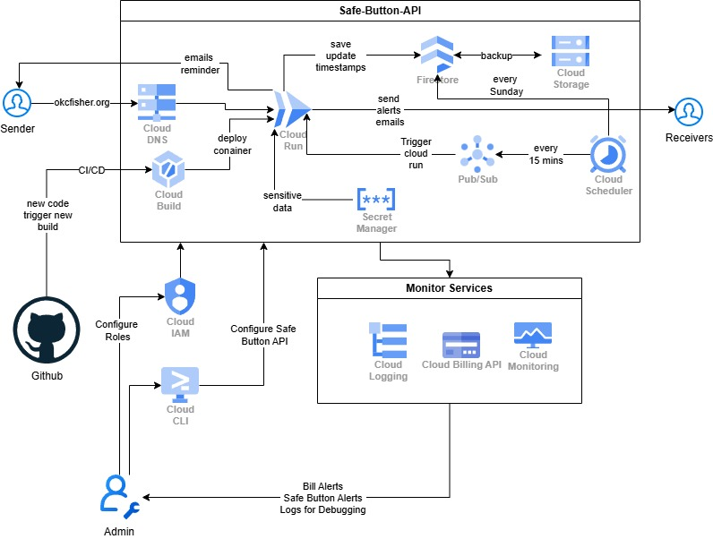
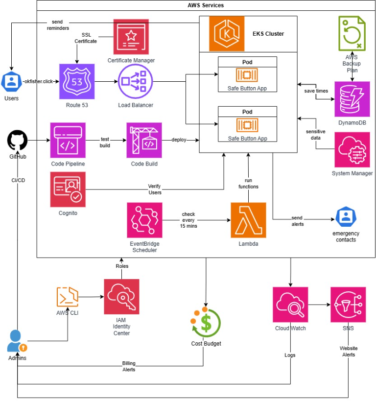

Google Cloud
The main branch contains the Flask check-in app and a Cloud Build workflow. The check-in sends a timestamped email through configurable SMTP settings.
Explore Google Cloud branch ↗Cloud application · Multi-cloud
A daily check-in dashboard that helps people let a trusted contact know they are okay. A single check-in records the update and sends a timestamped email.

This preview loads the currently deployed Daily Check-In Dashboard.
Open the dashboard in a new tab ↗Safe Button is a Flask application built around a simple daily check-in workflow. The project explores how the same application idea can be deployed using two different cloud platforms, with each implementation using its own identity, storage, and delivery services.
The main branch contains the Flask check-in app and a Cloud Build workflow. The check-in sends a timestamped email through configurable SMTP settings.
Explore Google Cloud branch ↗The AWS branch adds Cognito sign-in and per-user DynamoDB records, with an EKS deployment pipeline built from CodePipeline and CodeBuild.
Explore AWS branch ↗
